01 · Estructura
Empieza por C4: sistema, aplicaciones, componentes y un caso de uso en código.
La implementación se organiza alrededor de un motor LangGraph compartido. La consola web recibe la solicitud; FastAPI la valida; AnalysisService obtiene las señales y administra el historial; LabEngine prepara y ejecuta el grafo. Investigador, juez y reportero trabajan dentro del mismo proceso Python. La política calcula la propuesta y la interfaz explica los eventos registrados.
Leer la guía completa y el ejemplo de Redis →Empieza por C4: sistema, aplicaciones, componentes y un caso de uso en código.
Sigue una solicitud, las rondas del grafo y las reglas que producen cada decisión.
Relaciona datos, despliegue y módulos con los archivos concretos que los implementan.
¿Para quién existe TiderOps y con qué sistemas se relaciona?
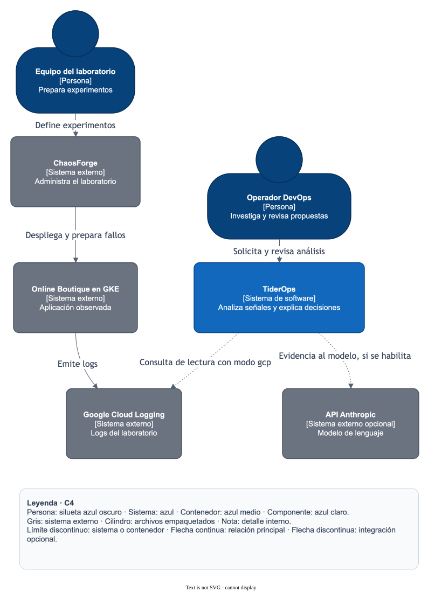
TiderOps ayuda al operador a investigar incidentes de Online Boutique. ChaosForge administra el laboratorio. La consulta a Cloud Logging y el proveedor de modelos son integraciones configurables.
¿Qué aplicaciones ejecutables forman la consola?
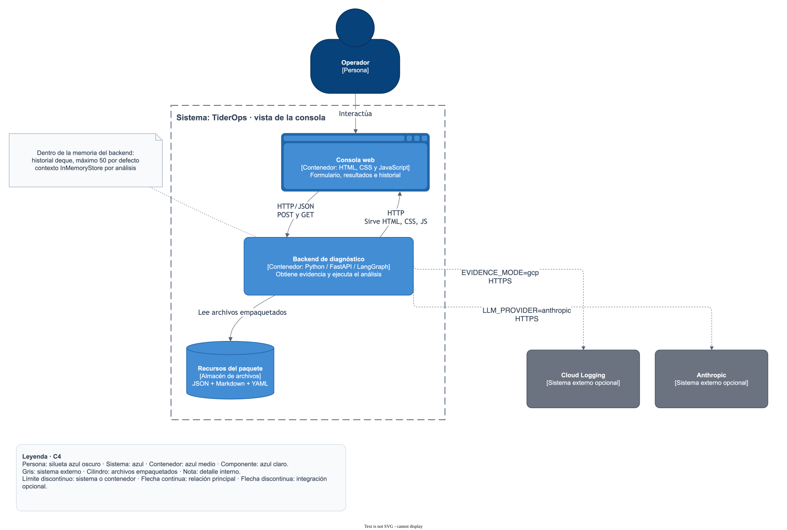
La consola tiene una aplicación web que corre en el navegador y un backend Python. El backend sirve los archivos estáticos y ejecuta el grafo. Los agentes son componentes internos del backend.
¿Cómo se reparten las responsabilidades dentro del proceso Python?
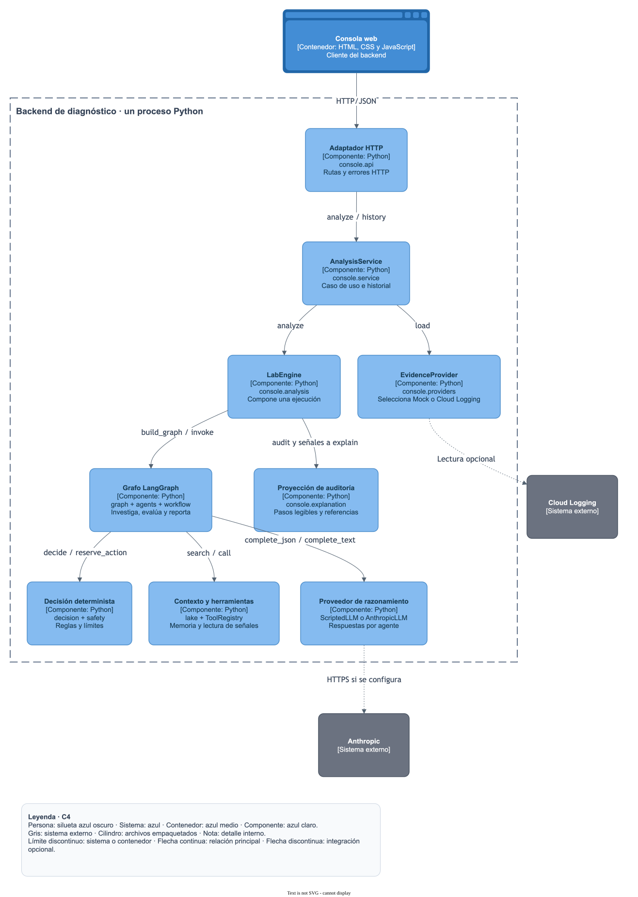
create_app compone el servicio, sus conectores y el motor. AnalysisService coordina el caso de uso; LabEngine adapta las señales al grafo compartido. La política y las explicaciones tienen módulos propios.
¿Cómo se implementó AnalysisService sin acoplarlo a HTTP ni a un proveedor concreto?
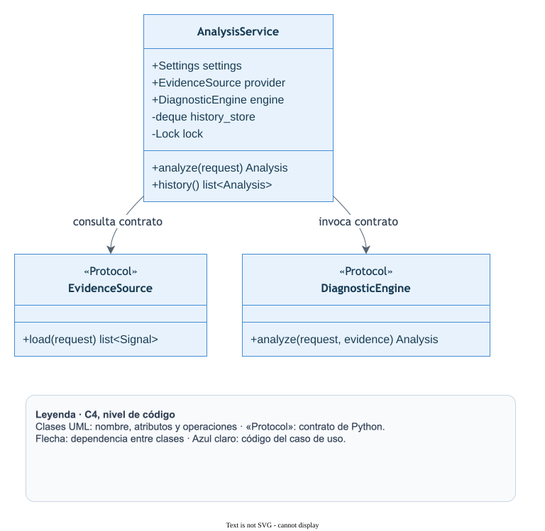
El caso de uso depende de dos Protocol de Python: EvidenceSource y DiagnosticEngine. Recibe sus implementaciones en el constructor. Esto permite probarlo con dobles y mantener separadas la consulta y la investigación.
¿En qué orden ocurre un análisis completo?
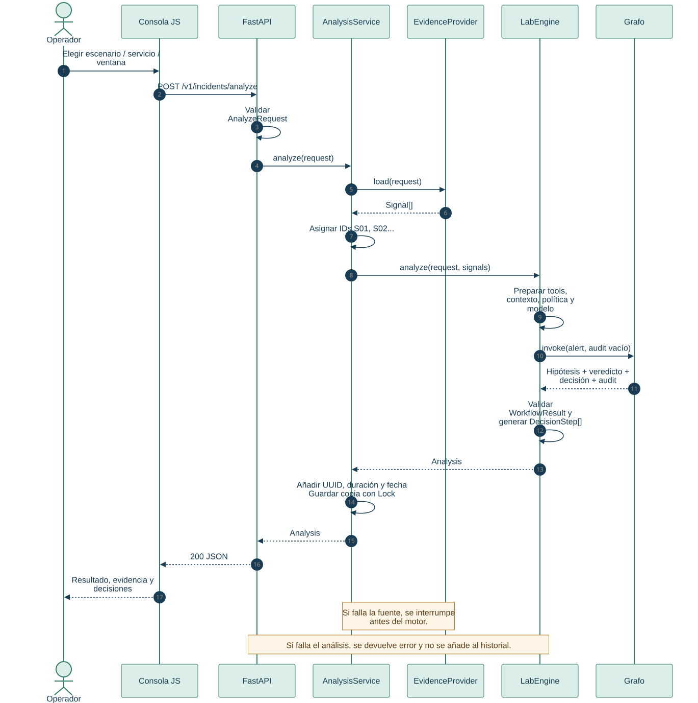
La solicitud HTTP valida la entrada, recoge evidencia y ejecuta el grafo de manera síncrona desde el punto de vista del cliente. Sólo un resultado completado se agrega al historial.
¿Qué hace cada agente y cuándo se repite la investigación?
LangGraph conecta ocho etapas. Investigador, juez y reportero usan el proveedor de razonamiento seleccionado. Recepción, recuperación, decisión y control de ejecución se implementan con código determinista.
¿Por qué el agente propone un runbook, un cambio o revisión humana?
La decisión final se calcula con reglas. La hipótesis propone una acción y el juez aporta respaldo y confianza. Las precondiciones operativas se leen de Evidence.data, no de texto libre.
¿Qué objetos viajan por la aplicación y cómo se relacionan?
Los modelos Pydantic validan la entrada y la respuesta pública. Signal es una señal de la fuente; Evidence es el registro de una herramienta dentro del motor. Analysis reúne ambas vistas a través del resultado del flujo.
¿Cómo se obtiene la evidencia y qué llega al razonamiento?
El gateway selecciona el proveedor indicado. Los mocks se leen del paquete; Cloud Logging consulta una ventana y entorno acotados, selecciona mensajes y enmascara patrones antes de construir Signal.
¿Dónde corre cada parte y qué se necesita para abrir la consola?
El backend puede iniciarse con make run en el entorno virtual o como un contenedor Docker. Son dos alternativas para la misma aplicación. Los recursos del laboratorio GKE son un destino externo de consulta.
¿Qué archivo debo cambiar para modificar una función del sistema?
La organización separa la presentación, el caso de uso, los adaptadores del laboratorio y el motor compartido. Las flechas indican dependencias principales de implementación; no son llamadas de red.
¿Qué se reorganizó y qué problema resolvió cada cambio?
La reorganización absorbió la consola en el repositorio del motor y separó los puntos que mezclaban responsabilidades. El objetivo fue hacer localizables las decisiones, los contratos y las pruebas.
¿Qué significa que un análisis terminó, necesita evidencia o falló?
Esta vista describe el ciclo de procesamiento. Sólo hypothesis e insufficient_evidence son valores del campo Analysis.status. Las otras cajas representan etapas o respuestas HTTP, no estados persistidos en una base de datos.